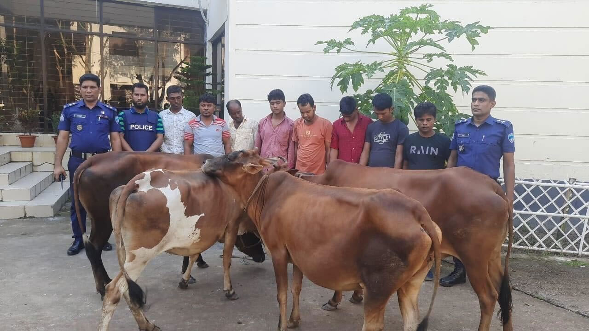

গরু চুরিতে এগিয়ে আছে সাতকানিয়ার মানুষ
প্রতিনিধি সাতকানিয়া, চট্টগ্রাম
প্রকাশ: ০১ এপ্রিল ২০২৩, ১৮: ৪৫

চট্টগ্রামের সাতকানিয়া উপজেলায় গরু চুরি করে প্রাইভেট কারে তুলে পালিয়ে যাওয়ার সময় পিটুনিতে তিনজন
আহত হয়েছেন। আজ শনিবার দুপুরে উপজেলার বাজালিয়ার অলি আহমদ বীর বিক্রম কলেজ এলাকায় কেরানীহাট-বান্দরবান
সড়কে এ ঘটনা ঘটে।
পিটুনিতে আহত তিনজনের মধ্যে দুজনের নাম জানা গেছে। তাঁরা হলেন এমরান (৩৪) ও ফয়সাল (৩২)। আহত তিনজনকে
উদ্ধার করে সাতকানিয়া উপজেলা স্বাস্থ্য কমপ্লেক্সে নেওয়া হয়।
উপজেলা স্বাস্থ্য কমপ্লেক্সের জরুরি বিভাগে কর্মরত চিকিৎসক আফরিন সুলতানা প্রথম আলোকে বলেন, পিটুনিতে
আহত তিন ব্যক্তিকে শনিবার বেলা তিনটার দিকে হাসপাতালে আনা হয়। তাঁদের অবস্থা আশঙ্কাজনক হওয়ায়
প্রাথমিক চিকিৎসা দিয়ে দ্রুত চট্টগ্রাম মেডিকেল কলেজ হাসপাতালে ভর্তির পরামর্শ দেওয়া হয়েছে।
পুলিশ ও প্রত্যক্ষদর্শী সূত্রে জানা যায়, শনিবার বেলা সাড়ে ১২টার দিকে বান্দরবান সদরের গোয়ালিয়া
খোলার পুরান ব্রিক ফিল্ড এলাকা থেকে চোরের দল একটি গরু প্রাইভেট কারে তুলে নিয়ে পালিয়ে যাচ্ছিল।
স্থানীয় লোকজন বিষয়টি টের পেয়ে গাড়িটির পিছু নেন এবং বাজালিয়া এলাকায় পরিচিতিজনদের মুঠোফোনে
জানিয়ে দেন। পরে বাজালিয়ার অলি আহমদ বীর বিক্রম কলেজ এলাকায় স্থানীয় লোকজন গাড়িটির গতি রোধ করলে একজন
পালিয়ে যান। পরে তিনজনকে আটক করে গণপিটুনি দেন তাঁরা। এ সময় প্রাইভেট কারটি ভাঙচুর করেছেন বিক্ষুব্ধ
লোকজন।
বান্দরবান থেকে গরু চুরি করে গাড়িতে তুলে নিয়ে পালিয়ে যাওয়ার সময় ওই তিন ব্যক্তি গণপিটুনির শিকার
হয়েছেন বলে নিশ্চিত করেছেন বাজালিয়া ইউনিয়ন পরিষদের চেয়ারম্যান তাপস কান্তি দত্ত।
সাতকানিয়া থানার ভারপ্রাপ্ত কর্মকর্তা মোহাম্মদ ইয়াসির আরাফাত প্রথম আলোকে বলেন, পিটুনিতে গুরুতর আহত
তিন ব্যক্তিকে পুলিশি পাহারায় চট্টগ্রাম মেডিকেল কলেজ হাসপাতালে ভর্তির জন্য পাঠানো হয়েছে। এ ঘটনায়
মামলা প্রক্রিয়াধীন।